Notes 2
Thematic Mapping and GeoVisualisation with R
Choropleth Map (a.k.a area shaded map)
A type of thematic map, areas shaded, values aggregated into geographical layer (eg. subzone)
The shading is the things we want to map (eg. Dependency ratio)

2 types of Choropleth Map
1) Classified -Classed
- combines areal units into small no. of groups (10 methods eg. ‘equal’, ‘quantile’)
No. of Classes
if <4, overly generalized map [Can use depending on context, eg. USA election, red camp VS blue camp]
keep <= 12, 7/8 shades of the same color
if too many, our eyes cannot differentiate them wel
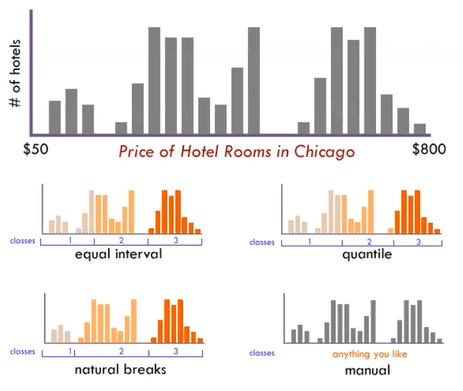
equal = divide into same range (not suitable for highly skewed data set)
quantile -> into different percentage
natural breaks (a.k.a. jenks) -> fuse between equal & quantile method
standard deviation -> if data is normal distribution only
2) Unclassified -Unclassed
- map it to the color, spectrum (the value) (eg. 0 -> 223)
Colour Scheme -ColorBrewer
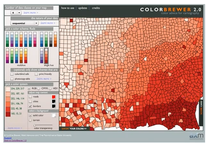
* Nominal Color Scheme -> Only for categorical data
| Color Scheme | Remarks |
|---|---|
| 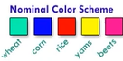 | Only for categorical data |
| 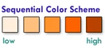 | For continuous + All value +/- |
| 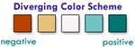 | For continuous + Value have both +/- only |
tmap package
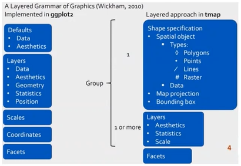
- supports 2 modes: plot (static map), view (interactive map)
Shape objects
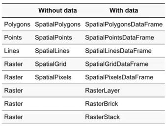
tmap element
-> always start with tm_shape()
* Put plus(+) sign to indicate it is a continuous code (Put it at the back)
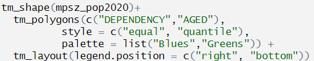
-> can later add
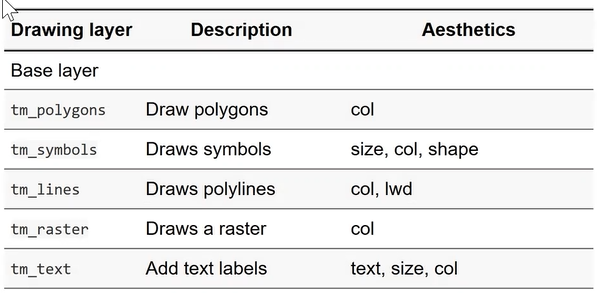
->can choose from this list
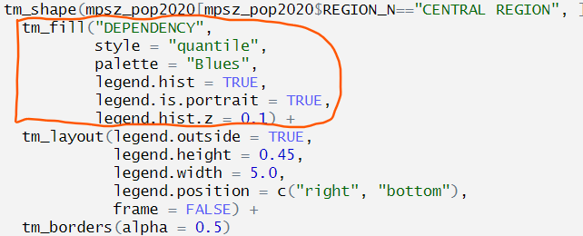

tm_polygons()
default classes = 5bins
default classification method = “pretty”
default color scheme = “YIOrRd” (yellow-orange)
missing value = gray
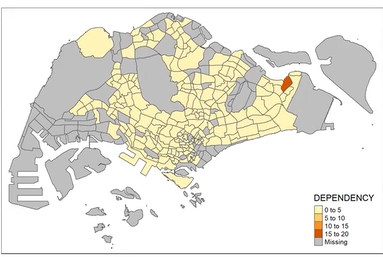
tm_border()
default lwd (border line width) = 1
alpha = between 0 (totally transparent) and 1 (not transparent)
- Default alpha = 1
col (border color)
default lty (border line type) = “solid”
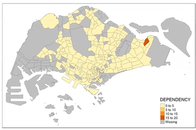
Map & Geographical Data

Geo VS Aspatial Data


Reference Maps |
show buildings, roads, vegetation, rivers eg. topo map like Google Map |
Thematic Map
|
emphasize the spatial pattern of geographic attributes or statistics about places and relationships between places such as Life in Los Angeles. |

Qualitative Thematic Map
Point symbol map Use point to represent school types |
 |
Line symbol map Show road network Different color intensity and thickness are used to differentiate hierarchy of roads |
 |
Area Map different colors to represent different land use types |
 |
Proportional Symbol Map
Use symbols of different sizes to represent data associated with different areas

Go for this kind:

Proportional Symbol Map -Bar Chart Map

Proportional Symbol Map -Pie Chart Map

Proportional Symbol Map -Junk Map

* ensure geographical lvl used is same
Brick Map

better to encode quantitative info graphically
Bricks VS Proportional Symbol Map

Proportional Symbol map can be more difficult to distinguish than brick
Dot Density Map

a type of thematic map -> use dot/symbols to show the values of >= 1 numeric value
each dot represent some amt of data